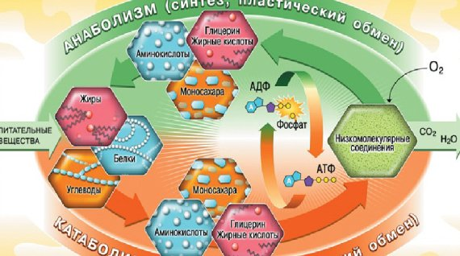

Применение черного тмина при нарушении обмена веществ
Общая слабость
Смешать 10 капель масла черного тмина со стаканом апельсинового сока и принимать полученный напиток в течение 10 дней сразу после пробуждения. ВАЖНО: Не спать после утреннего намаза.
Для улучшения памяти
1 столовую ложку мяты на стакан кипятка. Довести до кипения и смешать ее с 1 чайной ложкой меда и 7 каплями черного тмина. 0 M виде в любое время 1 месяц. Также следует прекратить употребление кофе и чая.